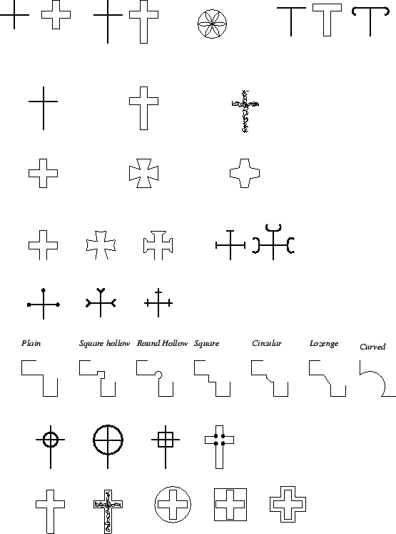

Subsections
A guide to the CISP database tables and fields
This chapter describes each table and field in turn and in detail along with
allowed entries, meanings and other relevant information. Simple look-up
tables will not be discussed in detail. After a few general points, each of
the five primary tables are discussed first along with related subsidiary and
hierarchical look-up tables, followed by the bibliographic, archive and image
subsystems.
General guidelines
Fields marked with a dagger () are memo fields, fields marked with § are the table's primary key fields.
As a general rule, no entries are to be left blank.
If the field is not applicable n/a should be entered;
if information is not
available, inc (`incomplete') should be entered; if
the information will never be available (for example the details
of an inscribed cross are too warn to be described) then
ind (indeterminate) should be entered.
Memo fields should conform to the following guidelines.
- Memo fields contain free-form text but the emphasis shall be on quoting
verbatim from the literature with appropriate bibliographic references.
The references should be of the following form:
- Macalister/1945: `...' or
- Macalister/1945, 345: `...' or
- Macalister/1945, 360-361: `...'
where the form of the reference is the same as that of the primary
key
in the BIBLIOG table. Note the use of the correct opening quote
(`) and the double dashes in the page ranges. In many cases a
specific page reference will be necessary.
- The information in the memo fields should be given in a concise note
form.
- Italics in memo fields should be indicated by
underscores, _some italic text_.
- Paragraphs should be indicated by a blank line.
The SITE and related tables
Tables considered in this section are SITE,
REGION, ALT_NAME, GRIDREF,
SITETYPE, and SAINT. Tables SITE_PUB
and SITE_IMG are discussed in sections
15-16.
The SITE table
The `site' is the earliest known location of a stone, not necessarily its
current location.
| Field |
Field Name |
Type |
Length |
| |
|
|
|
| §1 |
Site |
alphanumeric |
5 |
| 2 |
Name |
alphanumeric |
30 |
| 3 |
Cel_name |
alphanumeric |
30 |
| 4 |
Place |
alphanumeric |
30 |
| 5 |
Cel_place |
alphanumeric |
30 |
| 6 |
Parish |
alphanumeric |
30 |
| 7 |
Cel_parish |
alphanumeric |
30 |
| 8 |
County |
alphanumeric |
30 |
| 9 |
Cel_county |
alphanumeric |
30 |
| 10 |
Country |
alphanumeric |
30 |
| 12 |
Site_type |
alphanumeric |
5 |
| 13 |
Site_descrip |
memo |
- |
| 14 |
Site_history |
memo |
- |
- Unique five letter alphanumeric code in capitals. Code is derived from
the site's name and is assigned by CISP, and acts as the primary key for the table.
- Name of site. Use the name current in recent scholarly literature (list
alternative names in ALT_NAME table). In most cases this will be
the name of an adjacent farm,
church or village, or the name of the parish, townland or island. Despite
the
inconsistencies, names used by previous writers are retained unless there is
good reason to change (to differentiate two sites with the same name).
- The above name in the local modern Celtic language.
- Name of nearest town or village (in Ireland list the townland). In many
cases this will be the same name as fields 2-3.
- The above name in the local modern Celtic language.
- Name of ecclesiastical (not civil) parish (in Ireland list barony; in
Brittany list commune).
- The above name in the local modern Celtic language.
- County (pre-1974 counties for Britain, current counties for Ireland,
départements for France)
- The above name in the local modern Celtic language, if appropriate.
- Country: Scotland, Ireland (not distinguishing
between the Republic and Northern Ireland,
but see REGION below), Wales, England,
Isle-of-Man, Channel-Islands, France.
- The site_type is stored as a five letter lower-case code the
meanings of which are stored in the hierarchical look-up table
SITETYPE discussed on page
![[*]](crossref.gif) .
.
- Site_descrip: fuller description of extant physical
features of site, other standing remains, crop marks, finds. Particular
emphasis on early medieval period, but also on earlier phases, later only if
deemed relevant (Romanesque church).
- Site_history: any relevant historical information,
including place-name, documentary refs. to site, including details of any
excavation Details of dedication or other associations with saint.
In practice, it proved very difficult to split
site_descrip and site_history, and for many
sites there was very little information. In the longer term these
two fields are likely to be merged.
The SAINT table
The name of any saint associated with site, place-name, church
dedication, historical reference . This is stored in a separate table
since a site may have more than one, either simultaneously or temporally.
| Field |
Field Name |
Type |
Length |
| §1 |
Site |
alphanumeric |
5 |
| §2 |
Saint |
alphanumeric |
30 |
- §Site code; links to SITE table.
- §Name of saint (without `St').
The REGION table
This table allows otherwise cumbersome searches by historic region.
Further regions can be added easily as the need arises. Below are some
suggestions.
| Field |
Field Name |
Type |
Length |
| §1 |
County |
alphanumeric |
30 |
| §2 |
Region |
alphanumeric |
30 |
- §County
- §Region
-
- Ireland
- Munster, Leinster, Ulster, Connacht; also: Northern
Ireland
- Scotland
- Pictland, Dál Ríada, Between-the-Walls
- England
- Dumnonia
- Wales
- 1974 counties.
- France
- historic Brittany, modern administrative Brittany, diocese.
-
- Munster
- Kerry, Cork, Waterford, Limerick, Tipperary, Clare
- Connacht
- Galway, Mayo, Sligo, Roscommon, Leitrim
- Leinster
- Wexford, Kilkenny, Carlow, Laois, Wicklow, Offaly, Kildare,
Dublin, Meath, Louth, Cavan, Longford, Westmeath
- Ulster
- Antrim, Down, Armagh, Tyrone, Fermanagh, Donegal, Londonderry,
Monaghan
- Dál Ríada
- Argyll and Southern Hebrides
- Pictland
- FIF, CLK, PER, ANG, STL, KCD, ABD, BNF, MOR, SUT, CAI, INV,
ORK, SHE, ROS, KNR, NAI [replace with full county names].
- Between-the-Walls
- LNK, RNF, AYR, DMF, WIG, BWK, PEB, DNB, ELO, MLO,
ROX, WLO (the British kingdoms between the Roman walls, Strathclyde,
Gododdin, Cumbria ) [replace with full county names].
Figure 9:
Conversion of OS grid letters to numbers. For example, SS
123 456 becomes 212300 145600.
|
|
The GRIDREF table
National Grid Reference given to monument or centre of site.
N.B. To ensure compatibility of grid references all must be stored as 12
figure numbers and, therefore their true accuracy must also be
recorded (12 figures implies an accuracy to the nearest metre).
This is recorded as a measurement in metres, a GB letters 8 figure
reference (SS 1456 3256) is to 10 metres, 6 figures to 100
metres, and 4 figures to 1km. The GB letters need to be converted
to numbers representing their 100km grid square. For the north of
Scotland this will result in a 7 figure northing.
| Field |
Field Name |
Type |
Length |
| §1 |
Site |
alphanumeric |
5 |
| 2 |
System |
alphanumeric |
7 |
| 3 |
East |
numeric |
- |
| 4 |
North |
numeric |
- |
| 5 |
Accuracy |
numeric |
- |
- §The site code.
- System (GB, Ireland, France)
- Eastings: 6 figure reference to include numeric version of letter code.
- Northings: as above (7 figures for the north of Scotland).
- Accuracy in metres.
The ALT_NAME table
Alternative name(s) for a site, Inis Cealtra is also known in the
literature as `Holy Island' and `Inishcaltra', Toureen Peakaun is also known
as `Kilpeakaun'. See also the ALTSNAME table.
| Field |
Field Name |
Type |
Length |
| §1 |
Site |
alphanumeric |
5 |
| §2 |
Alt_name |
alphanumeric |
40 |
- §The site code.
- §The alternative name.
The SITE_TYP table
This is a look-up table for the site_type field of the
SITE table.
| Field |
Field Name |
Type |
Length |
| §1 |
Sitetype |
alphanumeric |
5 |
| 2 |
Description |
alphanumeric |
25 |
- §A five letter code in lower case.
- A description of the site type.
The following lists the contents of this table. It is intended that this list
is comprehensive but it may be added to if necessary. The sitetype
field contains the allowed codes for the site_type field of the
SITE table.
| Sitetype |
Description |
| |
|
| cemet |
cemetery[1] |
| eccle |
ecclesiastical[2] |
| inc |
incomplete information |
| ind |
indeterminate |
| lands |
landscape setting |
| modsc |
modern secondary[3] |
| n/a |
not applicable |
| other |
other |
| settl |
settlement |
| soutn |
souterrain |
[1] without associated church
[2] church, abbey, early Christian site, including graveyard
[3] First found re-used in a post-medieval context or
structure (other than
a church), as a gatepost, a house lintel, or in a wall.
The STONE and related tables
Tables considered in this section are the
STONE, ALTSNAME, MUSEUM, LOST,
OTHERLOC, FOLKLORE, INSCROSS, DECORATN,
DECOR_CD, and FORM tables. Tables
STON_PUB and
STON_IMG are discussed in sections
15-16. Look-up tables CIRCUM,
DAMAGE, SETTING, LOCATION, and STATUS
are not discussed in detail.
The STONE table
| Field |
Field Name |
Type |
Length |
| |
|
|
|
| §1 |
Site |
alphanumeric |
5 |
| §2 |
Stone |
numeric |
- |
| 3 |
Disc_circ |
alphanumeric |
15 |
| 4 |
Disc_when |
numeric |
- |
| 5 |
Disc_who |
alphanumeric |
20 |
| 6 |
Subsq_hist |
memo |
- |
| 7 |
Current_setting |
alphanumeric |
10 |
| 8 |
Current_location |
alphanumeric |
15 |
| 9 |
Loc_notes |
memo |
- |
| 10 |
Mon_form |
alphanumeric |
5 |
| 11 |
Form_notes |
memo |
- |
| 12 |
Completeness |
alphanumeric |
10 |
| 13 |
Preservation |
alphanumeric |
5 |
| 14 |
Prescondnotes |
memo |
- |
| 15 |
M_sources |
logical |
- |
| 16 |
M_height |
numeric |
- |
| 17 |
M_ht_status |
alphanumeric |
10 |
| 18 |
M_width |
numeric |
- |
| 19 |
M_wdth_status |
alphanumeric |
10 |
| 20 |
M_thickness |
numeric |
- |
| 21 |
M_thck_status |
alphanumeric |
10 |
| 22 |
I_source |
alphanumeric |
25 |
| 23 |
I_ht_feet |
numeric |
- |
| 24 |
I_ht_inches |
numeric |
- |
| 25 |
I_ht_status |
alphanumeric |
10 |
| 26 |
I_wd_feet |
numeric |
- |
| 27 |
I_wd_inches |
numeric |
- |
| 28 |
I_wdth_status |
alphanumeric |
10 |
| 29 |
I_th_feet |
numeric |
- |
| 30 |
I_th_inches |
numeric |
- |
| 31 |
I_thck_status |
alphanumeric |
10 |
| 32 |
No_carved |
alphanumeric |
2 |
| 33 |
Decor_notes |
memo |
- |
| 34 |
Visited |
logical |
- |
- §The site code.
- §Number assigned by the CISP data entry application
(if there is more than one stone at a site,
follow traditional numbering where possible).
- Circumstances of discovery. These codes are stored in the
CIRCUM table: first mentioned (earliest
reference in print or archive, circumstances of discovery unknown),
arch excav (archaeological excavation),
non-arch dig (non-archaeological excavation,
laying pipes, digging graves), recognised on standing monument (
stone previously known but inscription not recognised as such), found
built in/on structure or wall (when it was pulled down, stone
not previously known).
- Date of discovery or, if unknown, first publication.
- Name of person who discovered stone or, if unknown (or stone was
`always known'), who published the first
account. Names should be entered surname first, Macalister, R.
A. S. If unnamed, phrases like `workmen' are admissable.
- Notes on subsequent history of stone, later reuse, removal to
other
site(s), falling down, re-erection, if once part of named antiquarian
collection.
- The current setting of the stone: unattch (unattached), in
ground, on ground, in struct (in structure), in
display (default for museums). Values stored in look-up table
SETTING.
- Current location:
earliest (still in the earliest recorded location);
lost;
museum;
on site (generally on the same site as found, but not in the exact
original location, found originally when digging a grave, now set up in the churchyard);
other (any other location, for current location see OTHERLOC
table). These codes are stored in the LOCATION look-up
table.
- Precise description of location and related notes (to enable some
one looking for it to find it or differentiate it from other stones, also as
a bench-mark in case of future movement or loss).
- Physical form of monument: standard terms only permitted -- see
description of the FORM table below.
- Any further details of the physical form of the stone (excluding
ornament).
- Degree of completeness: complete (roughly 90-100% of
original monument survives), incomplete (60-90%),
frgmntry (less than 60%). Values stored in the
COMPLETE look-up table.
- State of preservation: good, some-damage,
poor. Values stored in the DAMAGE look-up table.
- Notes on the present condition if further description is
necessary, `damaged by
recutting for use as building stone', `water-worn', `broken at top',
`deteriorated considerably in recent past -- cast in NMI made in 1893 shows
more detail'.
The maximum height, width and thickness of the stone are recorded. These are
defined as follows:
- Height
- Vertical axis of upright stones, long axis of recumbents (as
per original orientation where this can be determined, not as it now lies if
fallen). This measurement will usually be the longest of the three
- Width
- Maximum dimensions of the cross-section, at 90 degrees to
height.
- Thickness
- At 90 degrees to both of the above. This will usually be the
shortest measurement of the three.
If additional measurements are required, because the shape is complex,
these are put in the physical form notes field.
It is noted whether the measurement is actual (the entire length was
available for measurement), visible (part of the stone was not
available for measurement because it was embedded in the ground or built into
a wall), uncertain (it is impossible to tell from the published
account), inc, ind or n/a. The last is used for
unmeasured lost stones in particular.
The minimum visible measurement is fixed conventionally as 0.01m. If the
information is not known it is given as 0.00m (because the field is numeric
therefore inc is a not possible entry).
Following the precedent of the British Academy Corpus of Anglo-Saxon Stone
Sculpture, and because most of the published corpora only provide
measurements in imperial units, each dimension is expressed in both metric
and imperial units (metric since it is the modern scientific standard,
imperial since it is thought to approximate to the units in use in
the early Medieval period). The source of each measurement is given (either
CISP, or bibliographic reference). If measurements are available
in only one format (metric or Imperial), the CISP data entry application
provides automated conversion to the other system. In this case,
the source is cited as converted.
Following the precedent of the British Academy Corpus of Anglo-Saxon stone
sculpture, the imperial units used are feet and inches (conventionally
expressed to 2 decimal places to allow for ).
- Source of data: CISP, reference, n/a or
converted.
- Height in metres.
- actual/visible/inc/n/aind/uncertain (source not
clear on this point)
- Width in metres.
- As for 17.
- Thickness in metres.
- As for 17.
- As for 15
- Height, feet part.
- Height, inches part.
- As for 17.
- Width, feet part.
- Width, inches part.
- As for 17.
- Thickness, feet part.
- Thickness, inches part.
- As for 17.
- Number of faces carved (excluding textual carving): 1 2 3 4 5 5+
- Other carving notes: additional information on carving other than
text (see also the INSCROSS and DECORATN tables
as appropriate).
- Has the stone been seen by CISP? Logical (yes/no) field.
The LOST table
Details of the date and circumstances of the loss of lost stones.
| Field |
Field Name |
Type |
Length |
| §1 |
Site |
alphanumeric |
5 |
| §2 |
Stone |
numeric |
- |
| 3 |
Date_last_present |
numeric |
- |
| 4 |
Date_missing |
numeric |
- |
| 5 |
Notes |
memo |
- |
- §Site code.
- §Stone number.
- Year last recorded present
- Year first recorded missing
- Notes (authority, bibliographic reference, circumstances, places
looked )
Fields 1 and 2 provide a link to the stone table.
The OTHERLOC table
If stone is no longer in its original/earliest location (the place
described in `site') and is
not in a museum, its current location is given as a grid
reference. See the GRID_REF table for more details on
the details of the grid references.
| Field |
Field Name |
Type |
Length |
| §1 |
Site |
alphanumeric |
5 |
| §2 |
Stone |
numeric |
- |
| 3 |
Placename |
alphanumeric |
35 |
| 4 |
Notes |
memo |
- |
| 5 |
System |
alphanumeric |
7 |
| 6 |
East |
numeric |
- |
| 7 |
North |
numeric |
- |
| 8 |
Accuracy |
numeric |
- |
- §The site code.
- §The stone number.
- The placename of the location.
- Any notes about this location.
- The grid system (GB, Ireland, France).
- The easting as a six figure coordinate.
- The northing as a six figure coordinate.
- The true accuracy of the reference in metres.
The MUSEUM table
Information about any stone currently housed in a museum (but not a church).
| Field |
Field Name |
Type |
Length |
| §1 |
Site |
alphanumeric 5 |
|
| §2 |
Stone |
numeric |
- |
| 3 |
Mus |
alphanumeric |
30 |
| 4 |
Acc_no |
alphanumeric |
30 |
- §The site code.
- §The stone number.
- Name of museum.
- Museum's accession/catalogue number.
The FORM table
This is a hierarchical look-up table of allowed forms.
| Field |
Field Name |
Type |
Length |
| §1 |
Mon_form |
alphanumeric |
8 |
| 2 |
Gen_form |
alphanumeric |
25 |
| 3 |
Med_form |
alphanumeric |
25 |
| 4 |
Detail_form |
alphanumeric |
25 |
- §The form code--a five character letter code in lowercase.
- The general categories of monument.
- The middle level of detail of category of monument.
- Detailed classification of monument form.
The following is a listing of the FORM table and is then followed by
definitions of some of the terms.
Figure 10:
Cramp shaft forms
|
|
Figure 11:
Cramp arm and terminal forms
|
![\includegraphics[width=\textwidth]{Cramp2n.eps}](img18.gif) |
Figure 12:
Cramp ring forms
|
![\includegraphics[width=\textwidth]{Cramp3n.eps}](img19.gif) |
| Mon_form |
Gen_form |
Med_form |
Detail_form |
| |
|
|
|
| arcar |
architectural element |
arch |
arch |
|---|
| arcbs |
architectural element |
building stone |
building stone |
|---|
| arcli |
architectural element |
lintel |
lintel |
|---|
| arcot |
architectural element |
other |
other |
|---|
| arcpa |
architectural element |
panel |
panel |
|---|
| block |
block |
block |
block |
|---|
| colum |
column |
column |
column |
|---|
| eccal |
ecclesiastical furniture |
altar |
altar |
|---|
| eccfn |
ecclesiastical furniture |
font |
font |
|---|
| eccot |
ecclesiastical furniture |
other |
other |
|---|
| fcbas |
free-standing cross |
cross-base |
cross-base |
|---|
| fcsA |
free-standing cross |
cross-shaft |
Cramp 1a |
|---|
| fcsA |
free-standing cross |
cross-shaft |
Cramp 1b |
|---|
| fccA1a |
free-standing cross |
complete |
Cramp sh. A, head 1a |
|---|
| fccB6e2 |
free-standing cross |
complete |
Cramp sh. B, head 6e, r2 |
|---|
| fccB8e5 |
free-standing cross |
complete |
Cramp sh. B, head 8e, r5 |
|---|
| fch1a |
free-standing cross |
cross-head |
Cramp head 1a |
|---|
| |
|
|
|
| fscuc |
free-standing cross |
otherwise unclassified |
otherwise unclassified |
|---|
| fccgw |
free-standing cross |
complete |
Glams.
`wheel headed' type |
|---|
| fragy |
fragment |
fragment |
fragment |
|---|
| nboul |
natural |
boulder |
boulder |
|---|
| ncave |
natural |
cave |
cave |
|---|
| nrock |
natural |
rock outcrop |
rock outcrop |
|---|
| pillc |
pillar |
slab (flat) |
cross-marked |
|---|
| pillp |
pillar |
slab (flat) |
plain |
|---|
| pilsc |
pillar |
stone (squarish) |
cross-marked |
|---|
| pilsp |
pillar |
stone (squarish) |
plain |
|---|
| recmo |
recumbent monument |
recumbent monument |
recumbent monument |
|---|
| rpmeg |
re-used |
prehistoric |
megalith |
|---|
| rpout |
re-used |
prehistoric |
carved
rock outcrop |
|---|
| rralt |
re-used |
Roman |
altar |
|---|
| rrarc |
re-used |
Roman |
architectural fragment |
|---|
| rrmil |
re-used |
Roman |
milestone |
|---|
| rroth |
re-used |
Roman |
other |
|---|
| sarco |
sarcophagus |
sarcophagus |
sarcophagus |
|---|
| slbbd |
worked slab |
body-slab |
body-slab |
|---|
| slbcr |
worked slab |
cross-slab |
cross-slab |
|---|
| slbns |
worked slab |
name-slab |
name-slab |
|---|
| slbot |
worked-slab |
other |
other |
|---|
| |
|
|
|
This list of terms is not complete as not all the possible forms of
cross, cross shaft and base taken from Cramp's Cramp:1984 typology
were entered as necessary. Figures 10-12
show Cramps classification. The codes are created as follows
- First three letters are fcc (free-standing cross, complete),
fcs (free-standing cross, cross-shaft) or
fch (free-standing cross, cross-head).
- Append shaft type (A or B) if appropriate.
- Append head-type from Cramp's table (see figure
11), 6e.
- Append number for ring-type (see figure 12),
5.
Additionally, there is a separate category for `Glamorganshire
disk' or `wheel headed' crosses (fccgw).
The following provides additional definitions of some of the terms encountered in the
above table.
- reused
-
- prehistoric
-
- megalith
- A menhir, dolmen or component of
stone circle.
- carved rock outcrop
- A cup-marked surface or similar.
- natural
-
- rock outcrop
- As carved rock outcrop above but no earlier carving.
- boulder
- Boulder--differs from an outcrop in not being attached to
ground, but not tall and thin like a pillar, and is unshaped.
- architectural element
-
- building stone
- undifferentiated wall block
- lintel
- of a door or window
- panel
- a flat slab designed to be set into the wall of a building,
dedication slab, frieze
- arch
- (component)
- other
-
- burial monument
-
- sarcophagus
- hollow burial monument, with or without lid
- recumbent
- a thick body cover, not a flat slab but carved on
vertical sides as well as top
- pillar-stone
- tall and thin, squarish or round cross-section, unworked
or lightly worked
- cross-marked
- with cross
- plain
- no carving other than text
- pillar-slab
- tall and thin, flat face, rectangular cross-section,
unworked or lightly worked
- cross-marked
- with cross
- plain
- no carving other than text
- column
- tall and thin, squarish or round cross-section, fully worked.
- block
- thick squarish lump of worked stone not otherwise differentiated
of which the function is not clear, not a fragment since substantially
intact, not building stone since carved on more than one surface.
- worked slab
- thin, rectangular or square and substantially worked
- name-slab
- these would usually be small -- less than long, are
more likely to be squarish than elongated, tend to be recumbent -- carved on
one side only, and be carved with little ornament beyond a simple cross, the
name predominates in the over all design (also known as a `pillow stone' but
this term avoided (a) to avoid predetermining function and (b) as this term
is strongly associated with Northumbria, to use it might imply influence)
- body-slab
- like the above but larger, usually elongated, usually
or long and - wide; cross often more substantial and
predominates. The difference between these and recumbent monuments is that
body-slabs are thin and quasi-two dimensional, and are not decorated on the
vertical faces.
- cross-slab
- upright, usually carved on at least two sides, usually
having a cross dominating but often with geometric or figural carving
- other
- uprights without cross
- fragment
- indeterminate -- too small to identify
The ALTSNAME table
Alternative name for stone. A stone may have more than one.
For example, local traditional name for stone or any other name under which
the stone has appeared in print; the Newton Stone, referred to in
earliest accounts as `Pitmachie stone', and also the `Shevock stone'
after nearby places. The Camp Ogham stone known locally as `Faisi's grave'.
| Field |
Field Name |
Type |
Length |
| §1 |
Site |
alphanumeric |
5 |
| §2 |
Stone |
numeric |
- |
| §3 |
Alt_sname |
alphanumeric |
30 |
- §Site code
- §Stone number
- §The alternative name
The FOLKLORE table
Folklore associated with stone (disregard things pertaining to site only).
| Field |
Field Name |
Type |
Length |
| $ 1 |
Site |
alphanumeric |
5 |
| $ 2 |
Stone |
numeric |
- |
| 3 |
Folklore |
memo |
- |
- The site code.
- The stone number.
- Notes concerning any traditional beliefs or practices pertaining
to the stone.
Since only a small minority of stones will have associated folklore it is
noted in a separate table.
The INSCROSS table
This table records the form of the inscribed crosses which may occur on a
stone.
| Field |
Field Name |
Type |
Length |
| §1 |
Site |
alphanumeric |
5 |
| §2 |
Stone |
numeric |
- |
| §3 |
Cross |
numeric |
- |
| 4 |
Shape |
alphanumeric |
10 |
| 5 |
Substance |
alphanumeric |
10 |
| 6 |
Arms |
alphanumeric |
10 |
| 7 |
Terminals |
alphanumeric |
10 |
| 8 |
Crossing |
alphanumeric |
10 |
| 9 |
Frame |
alphanumeric |
10 |
| 10 |
Ring |
alphanumeric |
10 |
| 11 |
Base |
alphanumeric |
10 |
| 12 |
Interior |
alphanumeric |
10 |
| 13 |
Chi_rho_hook |
logical |
- |
| 14 |
Other_embellishment |
logical |
- |
- §The site code.
- §The stone number.
- §The cross number--a stone can have more than one cross.
- Shape: equal-armed, latin,
arcs, tau, inc, ind,
n/a.
- Substance: linear, outline,
interlace, inc, ind,
n/a.
- Arms: straight, tapering, expanded,
inc, ind,
n/a.
- Terminals: plain, curved, round, half-round,
bifid, expanded, crosslet,
other, mixed,
inc, ind, n/a.
- Crossing: plain, square hollow, round hollow,
curved, circular, square,
lozenge, inc, ind,
n/a.
- Ring: none, inner curved, outer curved,
billet, angular, inc, ind,
n/a.
- Base: Any of the terminal types, plus angular and
tenon.
- Interior: plain, decorated, inc, ind,
n/a.
- Frame: none, circular, angular,
cruciform, inc, ind,
n/a.
- Chi-Rho Hook: logical field, yes/no.
- Other structural embellishment: logical field, yes/no.
Some of the terms used above are now further defined.
- Substance
-
- interlace
- constructed out of interlace, not an outline cross
decorated with interlace.
- Base
-
- tenon
- some kind of point
- Chi-Rho Hook
- proper chi-rho monograms are not crosses, this covers only crosses with a
little `hook' on the upper arm.
- Other embellishment
- some other structural aspect of the cross,
indentations in stem, scrolls or billets attached to stem -- anything on the
surrounding background will be covered in the DECORATN table.
Some types of cross inevitably have default entries in other
fields. For example, a linear cross must have n/a for
interior.
Figure 13 shows the meanings of the various terms in
diagramatic form.
Figure 13:
Guide to inscribed cross forms
|
 |
The DECORATN and DECOR_CD
tables
As any one stone many have more than one type of decorative element, and any
one decorative element can occur on more than one stone, we have a
many-to-many relationship which has to be
resolved by the use of the third linking table. The DECOR_CD table
lists the possible decorative elements in a codified form, and the
DECORATN table acts as a linking table between the STONE
table and the DECOR_CD table. The DECOR_CD table is a
look-up table similar to SITE_TYP.
The DECOR_CD table has the following structure.
| Field |
Field Name |
Type |
Length |
| §1 |
Type |
alphanumeric |
6 |
| 2 |
Description |
alphanumeric |
35 |
The entries in this look-up table are listed below.
| Type |
Description |
| animal |
animal |
|---|
| band |
band |
|---|
| beadg |
beading |
|---|
| boss |
boss |
|---|
| chirho |
chi-rho |
|---|
| figure |
figural |
|---|
| frame |
frame |
|---|
| geoinr |
geometric ribbon interlace |
|---|
| geoinz |
geometric zoomorphic interlace |
|---|
| geokey |
geometric key pattern |
|---|
| geooth |
geometric other |
|---|
| geospl |
geometric spiral |
|---|
| inc |
incomplete data |
|---|
| ind |
indeterminate |
|---|
| other |
other |
|---|
The structure of the linking table DECORATN is as follows.
| Field |
Field Name |
Type |
Length |
| §1 |
Site |
alphanumeric |
5 |
| §2 |
Stone |
numeric |
- |
| §3 |
Decor_code |
alphanumeric |
6 |
- §The site code.
- §The stone number.
- §The decoration code which is limited to one of the entries in the
type field of the DECOR_CD table.
As can be seen, any one stone can have many entries in this table, as can any
one decoration type. From this we can retrieve either all the elements on a
stone, or all stones which employ that element.
The INSCRIP and related tables
Tables considered in this section are: INSCRIP, NAMES,
SPEC_CHR, SPECIAL, and DATE.
Related look-up tables not discussed in detail are
DAMAGE, ORIENTAT, POSIT1,
POSIT2, POSIT3, POSIT4,
GENDER and LANGUAGE.
The INSCRIP table
This table is the primary table for recording details of the inscriptions
other than the text itself which is recorded in the READING
and TRANSLAT tables. A stone may have more than one inscription.
The definition of a `separate inscription' is a subjective decision and must
be based on common sense, if one obviously post-dates another, if they
are in manifestly different `hands', different scripts, on different faces of
the stone, relate to different fields of ornament
| Field |
Field Name |
Type |
Length |
| |
|
|
|
| §1 |
Site |
alphanumeric |
5 |
| §2 |
Stone |
numeric |
- |
| §3 |
Inscription |
numeric |
- |
| 4 |
Doubtful |
logical |
- |
| 5 |
Incomplete |
logical |
- |
| 6 |
Condition |
alphanumeric |
12 |
| 7 |
Legibility |
memo |
- |
| 8 |
Secondary |
logical |
- |
| 9 |
Orientation |
alphanumeric |
4 |
| 10 |
No_lines |
numeric |
- |
| 11 |
Position1 |
alphanumeric |
5 |
| 12 |
Position2 |
alphanumeric |
6 |
| 13 |
Position3 |
alphanumeric |
20 |
| 14 |
Position4 |
alphanumeric |
20 |
| 15 |
Position |
memo |
- |
| 16 |
Incision |
alphanumeric |
10 |
| 17 |
Technique |
memo |
- |
| 18 |
Names |
numeric |
- |
| 19 |
Language |
alphanumeric |
5 |
| 20 |
Ling_notes |
memo |
- |
| 21 |
Carve_err |
alphanumeric |
1 |
| 22 |
Script |
alphanumeric |
5 |
| 23 |
Letter_height_m |
numeric |
- |
| 24 |
Paleo_notes |
memo |
- |
- §The site code.
- §The stone number.
- §Number assigned by CISP to act as primary key in conjunction
with the site and stone fields. Number to be assigned `within' a stone, not
sequentially.
- Is there some reason to doubt whether or not the inscription should be
included? (the marks are indistinct or fragmentary and might not be a
genuine inscription; a description of a lost stone is vague; an inscription
may be a fake, or may be modern). N.B. If a stone can be definitely
excluded it should be, this is only if doubts remain. Logical yes/no field.
- Is there any reason to think that the inscription is incomplete? Logical yes/no field.
- What is the state of preservation? Allowed entries: good,
some-damage, poor, n/a. Values stored
in the DAMAGE table.
- Notes on the legibility of the text.
- Is the inscription obviously secondary? This can either be
the second, later inscription on a stone, or where a stone has
been used for an inscription secondarily to its function, a
graffito. Logical yes/no field.
- Orientation of text relative to vertical or long axis of stone (as
stone originally stood, or, in the case of stone inverted and re-used, as it
stood to bear this text).
The allowed entries (stored in the ORIENTAT table) are:
| circ |
circular |
|---|
| horz |
horizontal |
|---|
| inc |
incomplete entry |
|---|
| ind |
indeterminate |
|---|
| mix |
mixed directions |
|---|
| othr |
other |
|---|
| verd |
vertical down |
|---|
| vind |
vertical indeterminate |
|---|
| vruu |
vertical up up |
|---|
| vua |
vertical up along |
|---|
| vuad |
vertical up along down |
|---|
| vup |
vertical up |
|---|
| vupd |
vertical up down |
|---|
Some entries are only applicable to Ogham inscriptions,
vuad.
- Number of lines of text. A continuous line of text which turns corners
is 1 line.
- Position 1, text relative to compass points: applies only
to stones in landscape or churchyard settings which are not clearly secondary,
pillar-stones, pillar-slabs, cross-slabs, free-standing crosses, recumbents.
Allowed values stored in look-up table POSIT1.
- For upright monuments -- which face or arris is inscribed? If text
extends over more than one, list the face/arris on which text begins.
- For recumbents -- in which direction does the top of the slab
point?
Allowed entries: N S E W NE NW SE SW many all n/a ind inc which
are stored in look-up table POSIT1.
- Position 2, text relative to monument:
- cross-slabs -- broad, narrow, both (broad
and narrow)
- free-standing crosses -- head, shaft, base,
more (than one)
- pillars -- arris
- others -- top, other, n/a,
ind, inc
Allowed values stored in look-up table POSIT2.
- Position 4, text relative to inscribed cross, if applicable:
above cross;
below cross;
beside cross;
inc;
ind;
mixed;
n/a;
on cross;
within quadrants.
Allowed values stored in table POSIT3.
- Position 4, text relative to carving other than inscribed crosses.
Allowed values stored in
look-up table POSIT4. These are:
inc (incomplete data);
ind (indeterminate);
moulding (on a raised band or moulding);
other (all other possibilities);
panel (enclosed on all sides by a panel);
quadrant (within quadrant(s) of a cross);
separated (divided from other ornament by lines);
undecorated (undecorated);
undivided (in same field as other ornament).
- Incision -- type of cut, pocked, cut . The
controlled vocabulary of this field is yet to be determined.
- Technique -- memo field for the technique of letter carving
noting, in particular, differences of opinion.
- Number of individuals named (X son of Y is one
person, not two).
- Language of text other than personal-, place-, or ethnic-names. Allowed
terms are stored in the look-up LANGUAGE and include:
AS (Anglo-Saxon),
biblic (Biblical),
briton (Brittonic),
gaul (Gaulish),
goidel (Goidelic),
greek (Greek),
inc (incomplete data),
ind (indeterminate),
latcel (Latinised Celtic),
latin (Latin),
mixed (Celtic and Latin),
n/a (not applicable),
name (inscription consists solely of a name),
norse (Norse),
r-celt (Romano-Celtic),
unknwn (unknown).
- Linguistic notes. Although, logically, these pertain to `readings'
rather than `inscriptions', for practical reasons they are placed
here. `Linguistic' is loosely interpreted as any notes to do with
the meaning of the inscription. See also the memo field in the
NAMES table, and the linguistic indexing system.
- Has the carver made an error in carving? (N.B. does not
include textual `errors'): yes, no corrected (
self-corrected), inc.
- Kind of script used: rcaps (predominantly Roman capitals),
rbook (predominantly Roman book-hand), ogham (no-stem,
`non-scholastic'), oghms (Ogham with-stem, `scholastic'),
runes, greek.
- Maximum letter-height at surface of incision in mm.
- Roman alphabet -- largest letter
- ogham -- largest H/B stroke
- Palaeographic notes: any points of interest concerning form of
script used. This field is loosely interpreted and can be used for
notes regarding the reading of the inscription too.
The NAMES table
Information concerning names in inscriptions. There can be more
than one name in an inscription, each receives one row of data.
Compound names receive multiple rows too, Fred FILI Bert would
have an entry for Fred and Bert. If authorities disagree on the
reading of the name, a row can be input for each version of the
name. Some mark-up as for the transcription of inscriptions is
allowed, for example the use of square brackets ([ ]) or
indications of missing text ([--).
| Field |
Field Name |
Type |
Length |
| §1 |
Site |
alphanumeric |
5 |
| §2 |
Stone |
numeric |
- |
| §3 |
Inscription |
numeric |
- |
| §4 |
Name_id |
numeric |
- |
| 5 |
Name |
alphanumeric |
30 |
| 6 |
Language |
alphanumeric |
10 |
| 7 |
Gender |
alphanumeric |
1 |
| 8 |
Person_id |
logical |
- |
| 9 |
Name_notes |
memo |
- |
- §The site code.
- §The stone number.
- §The inscription number.
- §A sequential number to act as part of the primary key.
This number has no meaning beyond being an identifier.
- Text of name (as it appears on stone).
- Language of name--as for language in the INSCRIP
table (also uses look-up table LANGUAGE).
- Gender of name: male, female, either,
unknown, n/a, inc. Uses look-up table GENDER.
- Known: can the person be identified from historical sources? Logical
yes/no field. This is reserved for compelling identifications only.
- Any historical or linguistic notes on the name.
The DATE table
A published opinion on the date of an inscription. An inscription may have
more than one of these.
| Field |
Field Name |
Type |
Length |
| §1 |
Site |
alphanumeric |
5 |
| §2 |
Stone |
numeric |
- |
| §3 |
Inscription |
numeric |
- |
| §4 |
Date_id |
numeric |
- |
| 5 |
Authority |
alphanumeric |
25 |
| 6 |
Date_from |
numeric |
- |
| 7 |
Date_to |
numeric |
- |
| 8 |
Date_notes |
memo |
- |
- §The site code.
- §The stone number.
- §The inscription number.
- §A number assigned by CISP.
- Source of date (links to bib_ref field of the BIBLIOG table.
- Start of date range.
- End of date range.
- Notes concerning the date, usually a quotation from the
authority concerned.
Many of the dates are `conventional' and are entered in the following manner:
| Phrase |
Date from |
Date to |
| 6th century |
500 |
599 |
| 6th to 7th centuries |
500 |
699 |
| mid 6th to mid 7th centuries |
550 |
650 |
| late 6th to early 8th centuries |
566 |
733 |
This conventional phrases will eventually be stored in a look-up table to
enable easier extraction of inscriptions of certain dates. More precisely
dated inscriptions, those that mention a specific person, will use those
dates.
The SPEC_CHR and SPECIAL tables
The structure and use of these two tables is similar to those for carved
decoration discussed in section 11.9 on page .
These tables enable the tagging of distinctive letter-forms and other
palaeographical features. As an inscription may have more than one special
character, and a special character can be found in more than one inscription,
this is a many-to-many relationship which
is resolved through the use of a linking table. In
this case, table SPECIAL is the linking table and SPEC_CHR
is the list of special characters. The latter can also been seen as a look-up
table.
The structure of the SPECIAL table is:
| Field |
Field Name |
Type |
Length |
| §1 |
Site |
alphanumeric |
5 |
| §2 |
Stone |
numeric |
- |
| §3 |
Inscription |
numeric |
- |
| §4 |
Spec_char |
alphanumeric |
5 |
- §The site code.
- §The stone number.
- §The inscription number.
- §The special character code which links to the SPEC_CHR
table.
The structure of the SPEC_CHR table is:
| Field |
Field Name |
Type |
Length |
| §1 |
Spec_char |
alphanumeric |
5 |
| 2 |
Character |
alphanumeric |
40 |
- §The character code and primary key.
- Explanation or full name.
As data entry progresses it will become clear which characters need to be
flagged. The following are examples only
- roman predominantly capitals
- horizontal-I
- angle-bar-A
- retrograde-S
- retrograde-N
- roman predominantly bookhand
- punctuation
- initial cross
- dividing cross
- suspension mark
- ogham
- the various supplementary letters
- bound letters
- word-division
- directional indicator
These tables will eventually be expanded into a palaeographic
indexing system.
The READING table
The only other table directly related to READING is the linking
table READ_PUB which will be discussed in section 15.
This table contains published readings of text (or CISP reading if visited).
An inscription may have many of these.
| Field |
Field Name |
Type |
Length |
| §1 |
Site |
alphanumeric |
5 |
| §2 |
Stone |
numeric |
- |
| §3 |
Inscription |
numeric |
- |
| §4 |
Reading |
numeric |
- |
| 5 |
By_whom |
alphanumeric |
20 |
| 6 |
When |
numeric |
- |
| 7 |
Text |
memo |
- |
- §The site code.
- §The stone number.
- §The inscription number.
- §The reading number assigned by CISP. All four fields
together act as the primary key.
- Name of authority in full, Macalister, R. A. S.
- Date of this reading noted, because the authority may give different
readings at different times and the latest is not always the best, if it
is many years since the stone was actually seen and the reading has been
`tidied'; stone may have deteriorated physically over time, .
If not date for reading given, date of publication used. If
multiple visits cited, date of last visit.
- Text of reading, transliteration of inscription--see below.
Transliteration of inscriptions
Obviously, established conventions should be followed wherever possible,
however:
- Although there is substantial convergence among the various systems
there are numerous difference in detail.
- Existing systems draw heavily on typographical features which are
unavailable to us in the database (subscript dots) or are likely to prove
too cumbersome to achieve (italics).
- Existing systems use new lines of printed text to reflect layout of
inscribed
text whereas we must input ours as one continuous string of data.
As a result, therefore, some innovation is unavoidable.
As we see it, the main drawbacks for our purposes with existing systems are
that they distinguish between too many levels of uncertainty, and that they
represent transliteration and expansion of abbreviations at a single stage.
By separating out these last two functions we
need display less information at each stage.
As there are unrestricted notes on completeness and legibility of the text in
other fields, what is needed is a simple, comprehensive and accurate
transcription of what is actually on the stone. Abbreviations are expanded
(and lacuna supplied) in a separate table.
In what follows CISP innovations are marked with a #
The prevailing convention is to transcribe as upper-case, regardless of
whether or not the originals are capitals (runic inscriptions are
conventionally transcribed as lower case).
- A space in the transliteration represents a deliberate space in the
inscription (except either side of a |).
- |
- End of line.
- ||
- Text interrupted by a zone of ornament.
- |||
- # Text turns corner (not indicated as such in other
systems).
- [ ]
- # Material contained in square brackets [] is defective or difficult
to read (damaged or missing) and supplied by the reader.
- { }
- # Material in curly brackets {} is clear on stone but is in some
way unusual (an inverted letter) or, though legible, is difficult to
transliterate because the value is unknown or disputed (one of the more
unusual of the supplementary Ogham letters)
- Defective letters which can be restored with certainty --
Cramp:1984 and Okasha:1993 put these in square brackets.
RIB does not indicate them
if certain claiming that illustration shows clearly. CISP will follow
RIB and only mark if a letter is certain, or uncertain.
- Doubtful letters -- Okasha:1993 and Cramp:1984
indicate the preferred restoration of these with italics
within square brackets -- [AB], RIB uses a subscript dot.
Neither of these options is available to us typographically. If we are not
indicating the restoration of certain letters, then we use
[AB].
- # If there are two possible options then these can be indicated by
[
^], A[B^C]D represents ABD or ACD,
V[W^XY]Z represents VWZ or VXYZ. The preferred option
going first. This convention is intended primarily for use with Ogham
inscriptions where there is often more than one
option. In the interests of clarity only one alternative will be listed. If
there is more doubt than this the character will be transcribed as
`illegible'.
- ...
- Illegible (number of letters known): follow Okasha/Corpus --
[..] where one dot represents one letter.
- - -
- Illegible (number of letters unknown): follow Okasha/Corpus --
[--]
- Lacuna of unknown length at beginning or end of a line: RIB,
Okasha and Corpus all use different conventions. # CISP will use
--]
and [-- which is consistent with above convention.
- /
- Conjoined or ligatured letters, Æ: follow Okasha/Corpus and use
A/E
- :
- Punctuation of any sort.
- +
- Textual crosses in the body of the inscription (as
punctuation, not decoration).
- _
- # Suspension marks. The tilde will follow each letter.
- # Character inserted by carver
<AB>
- {}
- # Special characters, inverted characters,
compendia (per, pro), otherwise anomolous characters (described in full in
palaeographic notes field);
{A} a special form of A (angle-bar A,
an inverted A, ), {I}, {P}
- {*}
- Character legible but either not identifiable, or not
transcribable,
- # V for pointed character, U for rounded or square-bottomed
character,
regardless of whether consonantal or vocalic. RIB distinguishes in a
similar way (though their material is different).
All of the above conventions which are relevant apply.
The following transliteration scheme is used:
- BLVSN
- HDTCQ
- MGGwStR (Gw not Ng, St not Z -- N.B. these are extremely rare
epigraphically)
- AOUEI
- X represents first forfid (supplementary character -- reasonably
common)
- # If a value for a rare forfid is generally agreed, then transcribe
as a special form of the letter, angle-vowel A =
{A}
- # If a carved letter can be ascribed to a group but not specified
more closely then use
!, [B!] represents a B or a
subsequent member the B-group, [T!] represents T, C or Q. .
The TRANSLAT table
This table records the expansion and interpretation of each reading.
| Field |
Field Name |
Type |
Length |
| §1 |
Site |
alphanumeric |
5 |
| §2 |
Stone |
numeric |
- |
| §3 |
Inscription |
numeric |
- |
| §4 |
Reading |
numeric |
- |
| §5 |
Expand_id |
numeric |
- |
| 6 |
Expansion |
memo |
- |
| 7 |
Translation |
memo |
- |
- §The site code.
- §The stone number.
- §The inscription number.
- §The reading number.
- §The expansion number, assigned by CISP. All five fields
together act as the primary key.
- Expanded text of inscription (expanding contractions, suspensions or
other abbreviations) Both this and the following field can use elements of
the transliteration scheme from above where appropriate, in particular [ ]
to represent uncertain letters and
-- or ... to
represent missing letters or parts of the inscription.
- Translation/interpretation of above. Personal names are followed by
(PN). If no translation given in the published source, use
n/a.
The bibliography subsystem
This section contains the primary BIBLIOG table, and a number of
linking tables: SITE_PUB, STON_PUB, INSC_PUB,
READ_PUB, CORPORA and IMG_PUB. Logically, there
could also be a TRAN_PUB to link table TRANSLAT to
BIBLIOG but in practice the entries would be identical to
READ_PUB.
The BIBLIOG table
Full bibliographic references in a modified `Chicago A' style will be stored.
This table contains all bibliographic references.
As a general principle only `useful items' will be cited in
bibliographies:
- include first mention
- include references to standard corpora or by major authorities (
Macalister, Rhys)
- include any item containing original information or substantive
discussion
- include references with a good illustration
- exclude derivative or otherwise secondary discussion
- exlude mere mentions unless they come under one of the
above headings
Unpublished `official' documentation, OS record cards in NMRs are to be
cited where information is easily available.
The structure of the table is as follows:
| Field |
Field Name |
Type |
Length |
| §1 |
Bib_ref |
alphanumeric |
30 |
| 2 |
Reference |
alphanumeric |
255 |
| 3 |
Date |
numeric |
- |
| 4 |
Verified |
logical |
- |
| 5 |
CISP_notes |
alphanumeric |
40 |
- §A primary key (code). This will be constructed in a manner
similar to author-date reference systems, name+year. Examples:
- --
- Lockyear 1996 -- Lockyear/1996
- --
- Reece 1987a, 1987b -- Reece/1987a and
Reece/1987b , two separate records.
- --
- Lockyear and Wilcock 1985 -- Lockyear/Wilcock/1985
- --
- Lockyear, Ponting and Poenaru Bordea 1997 --
Lockyear/etal/1997.
- Full bibliographic reference (see examples below).
- Date of publication (this information, contained in the above field
also, is duplicated here to permit searching by date, all post CIIC refs.
to a particular stone).
- Has the reference been checked by CISP? Logical yes/no field.
- For project use only to help in the checking process,
locating references, .
Sample bibliographic entries
There follow some example references in the modified form of `Chicago A' in
the form that they will be entered into the ref field of table
BIBLIOG.
Book:
Thomas, C. (1993) _And Shall These Mute Stones Speak?_ Cardiff:
University of Wales Press.
Article:
Westwood, J. O. (1855) `Notices of several Early Inscribed Stones recently found in
various parts of Wales', _Archaeologia Cambrensis_ 3rd series, 1,
4-10.
Article in volume:
Craig, D. (1991) `Pre-Norman sculpture in Galloway: some territorial
implications', _in_ R. D. Oram and G. P. Stell (eds) _Galloway
Land and Lordship_, 45-62. Edinburgh: Scottish Society for
Northern Studies.
Two authors:
Dark, K. R. and S. P. Dark (1996) `New Archaeological and
Palynological...
Three or more authors:
Daire, M.-Y., A. Villard, S. Hinguant and E. Le Goff (1996) `Les steles
de l'age du fer a decors geometriques...
Editors: Use (ed.) for singular, (eds) for plural.
The SITE_PUB table
This table provides the link between a site, and the bibliographic
information. This linking table also contains extra information regarding the
connection between the two, specific pages and value.
| Field |
Field Name |
Type |
Length |
| §1 |
Site |
alphanumeric |
5 |
| §2 |
Bib_ref |
alphanumeric |
30 |
| 3 |
Pages |
alphanumeric |
40 |
| 4 |
Photo |
alphanumeric |
10 |
| 5 |
Drawing |
alphanumeric |
10 |
| 6 |
Map |
alphanumeric |
10 |
| 7 |
value |
alphanumeric |
25 |
- §The site code which links to the SITE table.
- §The bibliographic reference code which links to the BIBLIOG
table.
- Relevant pages, figure and table references.
- Is there a photograph? Allowed entries yes,
no, inc.
- Is there a drawing. Entries as for photo.
- Is there a map? Entries as for photo.
- Value of the reference--by definition all references cited are
non-trivial. All references are described with one of the following terms
which are stored in the look-up table PUB_VALS:
- cdisc
- concise discussion (the most common entry)
- illus
- illustration of use only
- inc
- incomplete data
- list
- listing (of stones, inscriptions, or other people's readings)
- minor
- minor reference
- other
- other reference
- read
- reading only (for READ_PUB table only)
- sdisc
- substantial discussion
N.B. The value of a given reference is relative to this
specific site. a single reference could be a substantial discussion of
one site but contain only a minor reference to another site. The
bibliography will be as comprehensive as possible and we would aim to give
all substantial discussions and first mentions, but minor references and
illustration only references will be included on an ad hoc basis.
The STON_PUB, INSC_PUB, and
READ_PUB tables
These tables are identical to the SITE_PUB table discussed in the
previous section with the exception of additional key fields providing the
link to the primary tables, the STON_PUB table has a
stone field which, in conjunction with the site field,
provide the link to the STONE table; the INSC_PUB table
has stone and inscription fields, and so on. The
INSC_PUB table only has photo and
drawing illustration fields; the READ_PUB table
has no illustration fields.
The conventions for value and cisp_notes fields are as for
the SITE_PUB table.
The CORPORA table
This is a special version of the linking table between the INSCRIP
table and the BIBLIOG table allowing retrieval of inscriptions via
standard corpus references CIIC, Nash-Williams, Okasha, Thomas Mute
Stones, Kermode, and others as appropriate.
| Field |
Field Name |
Type |
Length |
| §1 |
Bib_ref |
alphanumeric |
30 |
| 2 |
Corp_no |
alphanumeric |
10 |
| §3 |
Site |
alphanumeric |
5 |
| §4 |
Stone |
numeric |
- |
| §5 |
Inscription |
numeric |
- |
- §The bibliographic reference code.
- Designation in corpus.
- §The site code.
- §The stone number.
- §The inscription number.
The NAME_BIB table
This provides bibliographic references for names stored in the NAME
table.
| Field |
Field Name |
Type |
Length |
| §1 |
Site |
alphanumeric |
5 |
| §2 |
Stone |
numeric |
- |
| §3 |
Inscription |
numeric |
- |
| §4 |
Name_id |
numeric |
- |
| §5 |
Bib_ref |
alphanumeric |
30 |
| 6 |
Pages |
alphanumeric |
30 |
- §The site code.
- §The stone number.
- §The inscription number.
- §The name number.
- §The bibliographic reference code.
- Relevant pages.
The image subsystem
The IMAGE table will contained scanned images of sites, stone and
inscriptions.
The image table has the following structure:
| Field |
Field Name |
Type |
Length |
| §1 |
Image_no |
numeric |
- |
| 2 |
Type |
alphanumeric |
10 |
| 3 |
Label |
alphanumeric |
60 |
| 4 |
image |
graphic |
- |
- §Sequential reference number.
- Type of image: b/w (photograph) colour (photograph),
drawing, rubbing, squeeze, other.
- Label (`View of site from SW', `inscribed panel with letters
chalked in', `cast in National Museums of Scotland').
- The image itself.
This table can be linked to other primary tables via linking tables as in
other cases above.
This system replaces the `formula' fields/tables of the earlier
version of the database.
The system consists of two tables. The first, the
WORDINDX table ........ COMPLETE
Mike Gahan
2000-10-18